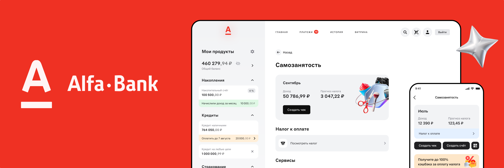
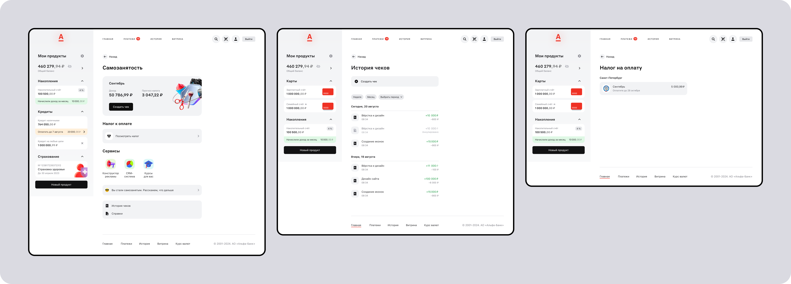
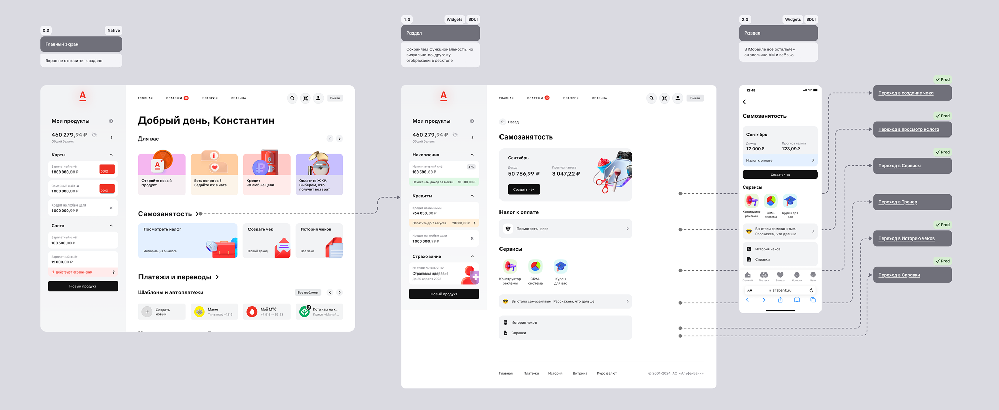
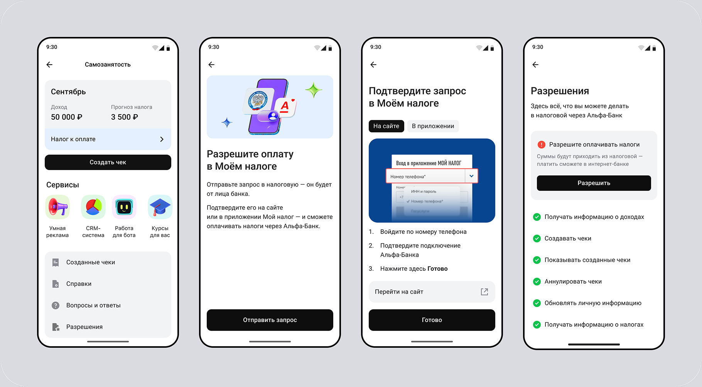
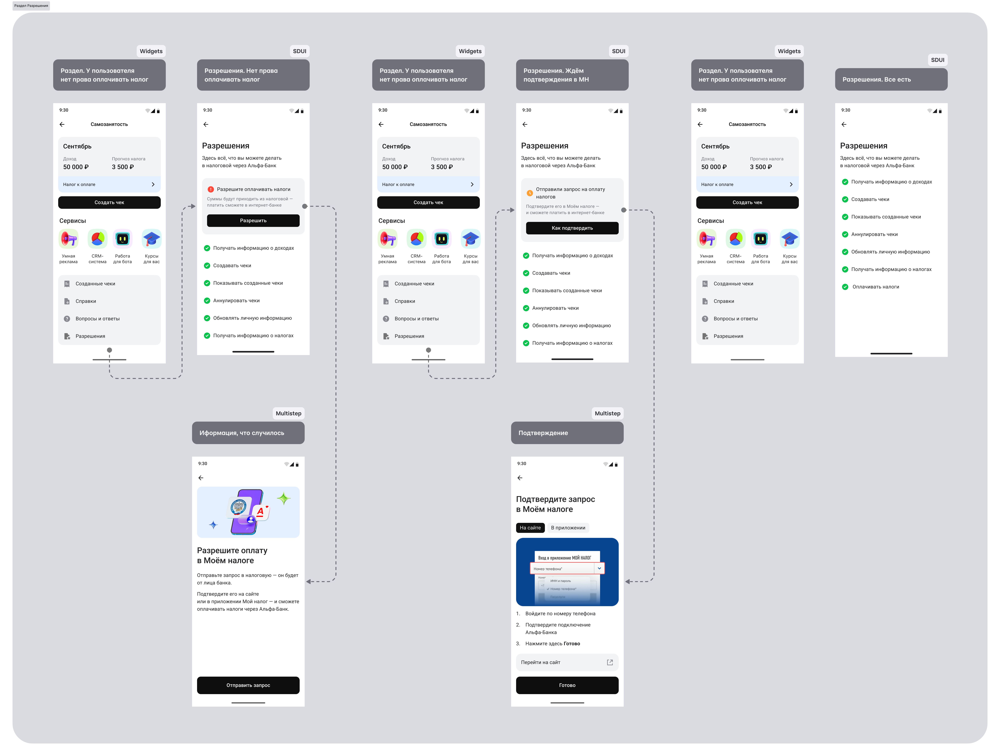
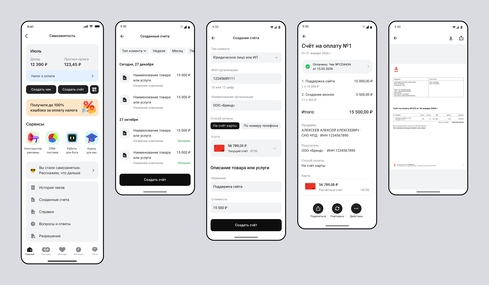

Three key projects within one service direction for self-employed customers.
Self-Employed Platform

Overview
I worked on the evolution of Alfa-Bank's self-employed services across mobile and web platforms.
Our goal was to make Alfa-Bank the primary financial tool for self-employed professionals by supporting key tasks such as tax payments, client interactions, invoicing, and receiving payments.
I contributed to improving existing experiences and designing new services for both mobile and desktop users.
Launching the Self-Employment Section in Alfa Online
Key screens

Description
The self-employment service was available only in Alfa-Bank's mobile application. Customers who preferred managing their finances on desktop were unable to access these features through the web platform.
This created an inconsistent experience across channels and limited the adoption of the service.
Goal
Launch the self-employment section in Alfa Online and adapt
existing mobile journeys for desktop users.
- Analyzed existing mobile user flows and product functionality.
- Designed desktop user journeys and interaction patterns.
- Created interfaces for new web sections and features.
- Adapted solutions to desktop-specific requirements and constraints.
- Collaborated closely with developers and ensured design quality throughout implementation.
Together with the team, we launched the self-employment section in Alfa Online within three months, from requirements definition to production release.
The launch expanded access to the service for customers who prefer desktop banking and provided a more consistent experience across mobile and web platforms.
Scenario

Restoring Permissions for Automatic Tax Payments
Key screens

Description
Users can connect Alfa-Bank with the Federal Tax Service (FTS) and enable automatic tax payments.
If a user revoked the permission, they had to restore it before using the service again.
Main challenge
The most difficult part of the flow was restoring previously
revoked permissions.
To restore access, users had to complete a verification process through the FTS. Part of this process took place outside the Alfa-Bank app, in interfaces that we could not control or change.
During the analysis, we found that many users had trouble finding the necessary sections and settings in both the FTS app and website. They often did not know where to restore permissions or what steps they needed to take.
- Analyzed the existing user journey.
- Identified the main pain points.
- Designed a step-by-step guide for the restoration process.
- Created clear instructions for each stage of the journey.
The guide helped users navigate third-party interfaces more easily, reduced confusion, and increased the chances of successfully completing the process.
Scenario


Invoicing for Self-Employed Professionals
Key screens

Description
Self-employed professionals regularly send invoices to clients to receive payment for their services.
This feature was available on the Federal Tax Service website but was missing from several major banking competitors. This gave Alfa-Bank an opportunity to provide a more convenient solution for self-employed users.
Goal
Allow users to create invoices directly in the banking app
and track their payment status.
The main recipients of invoices are companies, individual entrepreneurs, and private individuals.
Users wanted a fast and simple way to create invoices and track their status without switching to other services.
- Designed the invoice creation flow.
- Defined the form structure and required fields.
- Designed payment status tracking.
- Looked for ways to reduce the number of user actions.
- Participated in designing the MVP.
The new feature combined financial management and client communication in one product. It also strengthened Alfa-Bank's position in the self-employed market.
Scenario
Task 03 scenario image will be added here.